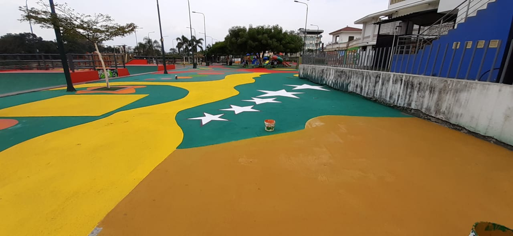

🎯
Misión
Promover el turismo rural, natural y gastronómico del cantón Ventanas, ofreciendo experiencias auténticas que generen bienestar económico para las comunidades locales y den a conocer la esencia montuvia de Los Ríos.

Descubre Ventanas nació como un proyecto académico con la idea de convertirse en la agencia de turismo local del cantón. Fundada por jóvenes emprendedores oriundos de Ventanas, la agencia busca dar a conocer un territorio de ecoturismo incipiente pero con enorme riqueza natural: ríos, cascadas y tierras fértiles de tradición montuvia.
Desde nuestros inicios trabajamos junto a familias agricultoras de Chacarita, Los Ángeles y Zapotal, guías locales y emprendimientos gastronómicos, para ofrecer experiencias auténticas que impulsen el turismo comunitario de Ventanas.
Investigación de los atractivos naturales y culturales del cantón Ventanas.
Coordinación con guías, haciendas y restaurantes típicos de las parroquias rurales.
Presentación de los primeros paquetes turísticos: cascadas, río y agroturismo.
Promover el turismo rural, natural y gastronómico del cantón Ventanas, ofreciendo experiencias auténticas que generen bienestar económico para las comunidades locales y den a conocer la esencia montuvia de Los Ríos.
Ser reconocidos, en los próximos años, como la agencia de referencia del ecoturismo y turismo rural en la provincia de Los Ríos, posicionando a Ventanas como un destino sostenible de río, cascadas y cultura montuvia.
Los principios que guían cada tour que organizamos.
Cuidamos los ríos, cascadas y tierras que hacen posible nuestros tours.
Trabajamos con familias y emprendimientos locales del cantón.
Valoramos y difundimos las tradiciones culturales de Ventanas.
Guías capacitados y experiencias seguras para toda la familia.
Ríos, cascadas y senderos a pocos minutos del centro de la ciudad, ideales para escapadas cortas.
El Día Nacional del Maíz y el festival "El Plato y La Cuchara Ventanense" reflejan la identidad campesina local.
Un turismo rural incipiente, ideal para quienes buscan experiencias genuinas y poco masificadas.